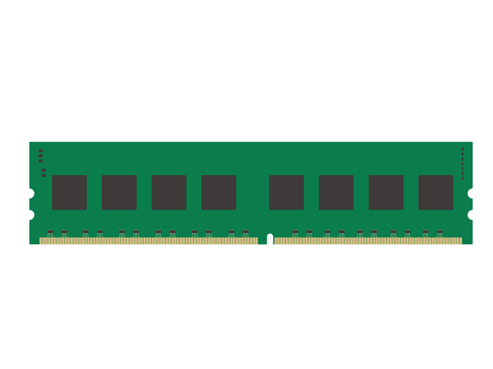
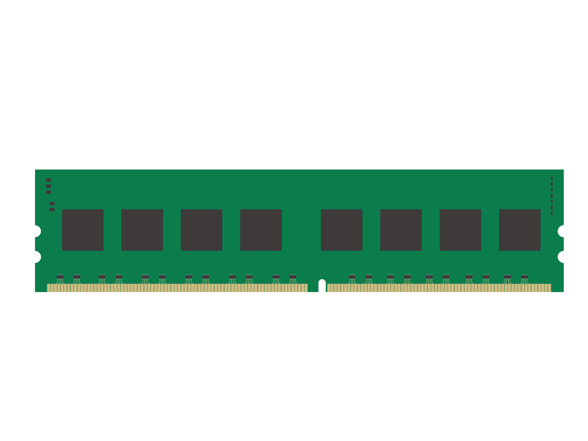

カスタムするCPUとGPUについて

CPU
インテル12/13世代Core iシリーズを搭載
11世代と比べてコア数が増加しており性能が大きく向上
・Peformance Core : 高性能なコアでメインでの処理を行う
・Efficient Core : 高効率なコアで省電力に優れており、バックグラウンドでの処理を行う
GPU
NVIDIA GeForce RTX3000シリーズを搭載
DLSSとレイトレーシング機能が備わっており、ゲームや動画編集が快適に
・DLSS … 荒い画質を綺麗にしつつフレームレートを伸ばすことができる
・レイトレーシング … ゲームで光や影をリアルに表現することができる
PCパーツの選び方

PCの性能は各PCパーツの総合力で決まります
◆CPU
PCの脳となる部分です。
中央演算処理装置とも呼ばれます。
PCゲームをする場合は
Core i5以上がおすすめ
・Core i5 … 価格を抑えてゲームや作業を行いたい方向け
・Core i7 … ゲーム配信を行う方や、3DCGモデル制作を行う方向け
・K付きCPU … 重たいゲームや、ゲームでよりフレームレートを出したい方向け
◆GPU(グラフィックボード)
主にゲームや動画編集で使用します。
画像処理装置とも呼ばれます。
Geforce RTXシリーズが
PCゲーミングに最適
・RTX3060 … RPGや動画編集ソフトを使う方向け
・RTX3060ti … フルHDゲームで144fpsを出したい方向け
・RTX3070 … ゲームでWQHD144fps 、4K60fpsを出したい方向け
・RTX3070ti … 重たいゲームや、WQHD高画質でゲームをしたい方向け
・RTX3080 … アバターを使用してのゲーム配信や4K120fpsを出したい方向け
◆RAM(メモリ)

作業用のメインメモリで、
主記憶装置とも呼ばれます。
メモリ容量が大きいほど机に広げる
ソフトが多くなりより快適に
・16GB…フルHDでのゲーム / 動画編集に最適
・32GB…ゲーム配信 / 4Kゲーミング / 4K動画編集をしたい方へ
・64GB…重たいゲーム配信 / ゲーム開発 / 3DCGモデル制作をする方等
◆ROM(ストレージ)
データ長期保存用のパーツで、
補助記憶装置とも呼ばれます。
ストレージは読込/書込速度の
速いNVMe M.2 SSDがおすすめ
SSDは容量が残り少なくなると速度が落ちます。
容量が多く耐久性が高い1TB以上を推奨。
・500GB…PCで複数のゲームや動画編集をしない方向け。
・1TB…ゲームやプログラミング、写真を保存する方に最適。
・2TB以上…重たいゲーム/ゲーム開発/3DCGモデル制作/動画等の
データを保存したい方はこちら。
デスクトップPCはBTOがおすすめ！
◆BTOとは … Build To Orderの略称で、
PCパーツの容量等をカスタマイズして注文することができます。
初期不良や動作チェックも予め行われた完成品が送られてきますので、
届いてすぐにセットアップできます。
自作PCに詳しくない方や組むのが面倒な方、初めてのデスクトップPCデビューにおすすめです。
◆CPU
PCの脳となる部分です。
中央演算処理装置とも呼ばれます。
PCゲームをする場合は
Core i5以上がおすすめ
・Core i5 … 価格を抑えてゲームや作業を行いたい方向け
・Core i7 … ゲーム配信を行う方や、3DCGモデル制作を行う方向け
・K付きCPU … 重たいゲームや、ゲームでよりフレームレートを出したい方向け
◆GPU(グラフィックボード)
主にゲームや動画編集で使用します。
画像処理装置とも呼ばれます。
Geforce RTXシリーズが
PCゲーミングに最適
・RTX3060ti … フルHDゲームで144fpsを出したい方向け
・RTX3070 … ゲームでWQHD144fps 、4K60fpsを出したい方向け
・RTX3070ti … 重たいゲームや、WQHD高画質でゲームをしたい方向け
・RTX3080 … アバターを使用してのゲーム配信や4K120fpsを出したい方向け
◆RAM(メモリ)

・16GB…フルHDでのゲーム / 動画編集に最適
作業用のメインメモリで、
主記憶装置とも呼ばれます。
メモリ容量が大きいほど机に広げる
ソフトが多くなりより快適に
・32GB…ゲーム配信 / 4Kゲーミング / 4K動画編集をしたい方へ
・64GB…重たいゲーム配信 / ゲーム開発 / 3DCGモデル制作をする方等
◆ROM(ストレージ)
データ長期保存用のパーツで、
補助記憶装置とも呼ばれます。
ストレージは読込/書込速度の
速いNVMe M.2 SSDがおすすめ
容量が多く耐久性が高い1TB以上を推奨。
・500GB…PCで複数のゲームや動画編集をしない方向け。
・1TB…ゲームやプログラミング、写真を保存する方に最適。
・2TB以上…重たいゲーム/ゲーム開発/3DCGモデル制作/動画等の
データを保存したい方はこちら。